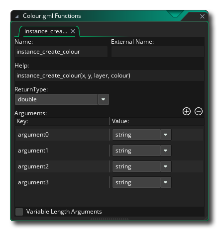
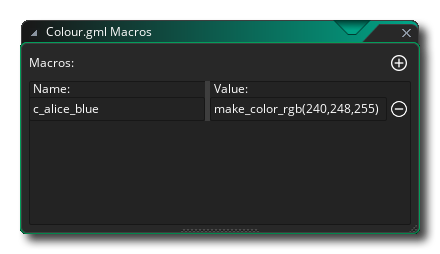
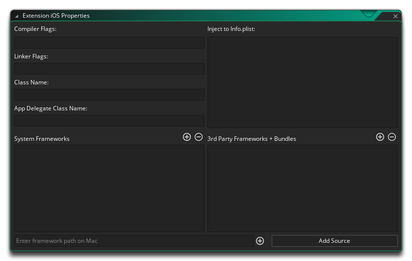

Ein Erweiterungspaket kann verwendet werden, um der GameMaker Sprache (GML) eine Reihe zusätzlicher Funktionen und Konstanten hinzuzufügen oder um Spielassets oder sogar ganze Projekte problemlos zwischen Personen zu übertragen. Wenn die Erweiterung um zusätzliche Funktionen erweitert wird, können die verwendeten Funktionen Ihr Spiel mit externen SDKs oder Quellcode, der in anderen Sprachen (z. B. Java für Android ) geschrieben wurde, sowie nativer GML verknüpfen. 
Erweiterungen von Drittanbietern stammen normalerweise vom GameMaker Marketplace. Die von Ihnen abonnierten Erweiterungen werden dann im Marketplace Library- Fenster aufgelistet und können von dort aus installiert werden oder durch Klicken mit der rechten Maustaste  Klicken Sie im Ressourcenordner der Erweiterungen auf Vorhandenes aus meiner Bibliothek hinzufügen. Wenn Sie Ihr Erweiterungspaket nicht vom Marketplace erhalten haben, können Sie es trotzdem durch Klicken mit der rechten Maustaste einem Projekt hinzufügen
Klicken Sie im Ressourcenordner der Erweiterungen auf Vorhandenes aus meiner Bibliothek hinzufügen. Wenn Sie Ihr Erweiterungspaket nicht vom Marketplace erhalten haben, können Sie es trotzdem durch Klicken mit der rechten Maustaste einem Projekt hinzufügen  den Erweiterungsordner im Ressourcenbaum und diesmal wählen Sie Vorhandene hinzufügen.
den Erweiterungsordner im Ressourcenbaum und diesmal wählen Sie Vorhandene hinzufügen.
Wenn du einen hast *.GMEZ Mit einer früheren Version von GameMaker Studio, können Sie diese durch Klicken mit der rechten Maustaste hinzufügen  Menüoption Datei importieren.
Menüoption Datei importieren.
Weitere Informationen zum Verwenden und Erstellen von Erweiterungspaketen finden Sie in den folgenden Abschnitten:
Nachdem Sie dem Ressourcenbaum eine Erweiterung hinzugefügt haben, sollten Sie ihm einen Namen und eine Versionsnummer geben sowie festlegen, auf welche Plattformen Sie ihn exportieren möchten. Indem Sie die ausgewählten Plattformen deaktivieren, können Sie GameMaker Studio 2 anweisen, die Erweiterung nicht als Teil der ausführbaren Datei für diese Plattformen zu exportieren. Sie sollten außerdem sicherstellen, dass die Erweiterungseigenschaften mit der Zielplattform bzw. den Zielplattformen übereinstimmen, und die Exportziele für die Erweiterungsdateien auf der Grundlage der folgenden Punkte bearbeiten:
- Alle Ziele: GML-Erweiterungen. Dies sind Erweiterungen, die mit der GameMaker Sprache (GML) erstellt wurden, und sind mit allen Zielplattformen kompatibel.
- Windows (Standard, UWP, XBoxOne): Sie können Windows-DLL-Dateien (Dynamic Link Libraries) verwenden.
- Mac OS: Das Mac OS-Ziel kann die Standard-DyLib-Dateien für Erweiterungen verwenden.
- Ubuntu (Linux): Für das Ubuntu-Ziel müssen Sie sicherstellen, dass Ihre Erweiterung SO-Dateien verwendet.
- Html5: Diese Plattformen können JavaScript-Erweiterungen verwenden.
- Android: Für diese Plattform muss eine Erweiterung in Java oder einem Android Framework SDK geschrieben sein.
- iOS: Erweiterungen für diese Plattform sind in Objective C geschrieben und erfordern eine *.mm- und eine *.h-Datei. Bei Verwendung von Frameworks eine vorkompilierte *.a-native Datei.
- PlayStation: Für PlayStation 3 oder 4 sollten Ihre Erweiterungen PRX-Dateien sein, wobei für jedes Ziel ein anderes PRX erforderlich ist, um die Spezifikation des Ziels (entweder PS3 oder PS4) zu erfüllen. Wenn Sie an einer PSVita arbeiten, sollte die Erweiterung stattdessen SUPRX sein.
Da einer einzelnen Erweiterung verschiedene Dateien zugeordnet sein können, ist es möglich, eine einzige Erweiterung für mehrere Plattformen zu erstellen. In diesem Fall müssen Sie alle kompatiblen Plattformen im Haupterweiterungseditor angeben (z. B.: Markieren Sie das Kontrollkästchen neben ihnen) und dann im Legen Sie für die einzelnen Dateieigenschaften für jeden Teil der Erweiterung die Plattform fest, auf die diese Dateien exportiert werden sollen. Um die Zielplattform für eine bestimmte Erweiterungsdatei oder einen bestimmten Platzhalter zu ändern, müssen Sie zunächst die Erweiterungseigenschaften öffnen (Doppelklick)
die Erweiterung ich den Ressourcenbaum oder verwende
und wählen Sie Eigenschaften öffnen ), und wählen Sie dann in den Erweiterungseigenschaften die Ressourcendatei rechts aus, die Sie bearbeiten möchten:
HINWEIS: Wenn Sie in das macOS- oder Ubuntu-Ziel exportieren, können Sie die Option "Als ZIP-Datei dekomprimieren" so einstellen, dass Dateiberechtigungen für die Erweiterung beibehalten werden.
Nachdem Sie Ihre Erweiterung installiert haben, können Sie die Funktionen und Konstanten genauso wie die in der GameMaker Sprache verwendeten integrierten Funktionen und Konstanten verwenden. Wenn Ihr Spiel plattformübergreifend ist (z. B. sowohl für Windows- als auch für Android Ziele), sollten Sie die Plattform mit den Konstanten und Funktionen des Betriebssystems überprüfen, bevor Sie erweiterungsspezifische Funktionen aufrufen, um beispielsweise folgende Probleme zu vermeiden:switch(os_type)
{
case os_android:
call_android_extension_function(x, y, z);
break;
case os_windows:
call_windows_extension_function(x, y, z);
break;
}Beachten Sie, dass Ihre Erweiterungen für verschiedene Plattformen Funktionsnamen verwenden können. Wenn Sie also eine Erweiterung mit unterschiedlichen Dateien haben, um beispielsweise eine Meldung für Windows und Android, können beide Erweiterungsdateien denselben Funktionsnamen haben, solange sie vorhanden sind Beide können nur auf ihre jeweiligen Plattformen exportiert werden.
Um eine Erweiterung zu erstellen, müssen Sie zuerst mit der rechten Maustaste klicken
Um eine Datei zur neuen Erweiterung hinzuzufügen, klicken Sie auf das Menüsymbol
und wählen Sie entweder eine Platzhalterdatei oder die tatsächlich für die Zielplattform erforderliche Datei aus:
Ein "generischer" Platzhalter ist eine Datei, die einen beliebigen Typ haben kann, mit Ausnahme derjenigen, die von den jeweiligen Plattformen benötigt werden (also beispielsweise keine DLL- oder SO-Dateien), und sie wird nicht als Linker-Datei für die Verbindung mit einer verwendet Satz von Funktionen oder Konstanten mit der angegebenen Erweiterung (im Allgemeinen nur für die Verwendung mit iOS- und Android Erweiterungen, was in den folgenden Abschnitten für diese Ziele erläutert wird). Sie können auch Platzhalterdateien "GML" und "JS" hinzufügen, um eine spezifischere Verwendung zu erreichen.
Normalerweise müssen Sie keine Platzhalter verwenden, es sei denn, Sie erstellen für iOS und Android. Daher wählen Sie die Option Dateien hinzufügen, um je nach Zielplattform eine der folgenden Dateien hinzuzufügen:
- .gml: Diese Datei wurde nur mit der GameMaker Sprache erstellt und ist mit allen Plattformen kompatibel.
- .js Hinweis: Dies ist ein JavaScript-Erweiterungsformat, das nur mit den JS-Zielmodulen (HTML5) kompatibel ist.
- .dll: Dies ist ein Erweiterungsformat für die Dynamic Link Library, das nur mit den Zielen von Windows, UWP und Xbox One kompatibel ist (jedes Ziel benötigt eine andere *.dll-Datei, die mit seinen Spezifikationen kompatibel ist).
- .dylib: Dies ist das Mac-Äquivalent einer DLL und ist nur mit einem Mac-Ziel (nicht iOS) kompatibel.
- .so: Dies ist das Linux-Äquivalent einer DLL und ist nur mit dem Ubuntu-Ziel (Linux) kompatibel.
- .prx: Dies ist ein Dateiformat zum Hinzufügen eines PS4-Funktionsziels (jedes Ziel benötigt eine andere *.prx-Datei, die mit seinen Spezifikationen kompatibel ist).
Sie werden feststellen, dass es keinen Dateityp für Android oder iOS gibt. Dies liegt daran, dass sie etwas anders eingerichtet sind. Weiter unten finden Sie Erklärungen, wie Sie diese einrichten. Zuerst müssen Sie jedoch eine allgemeine GML-Erweiterung für eine der Zielplattformen erstellen, da der Prozess für alle gleich ist.
Zunächst müssen Sie die Datei erstellen, die verwendet werden soll. Bei einer GML-Erweiterung handelt es sich hierbei um eine Textdatei (mit der gespeichert .gml Erweiterung) und würde etwa so formatiert sein:
#define c_alice_blue
return make_color_rgb(240,248,255);
#define instance_create_colour
var i = instance_create_layer(argument0, argument1, argument2);
with (i)
{
image_blend = argument3;
}
return i;Wie Sie sehen, beginnen wir jeden Abschnitt mit einem #define call, der im obigen Beispiel zur Definition von zwei Funktionen verwendet wird. Sie müssen keine Argumentfelder für die Funktionen angeben, da diese später hinzugefügt werden. Verwenden Sie einfach die Definition und dann den Namen der Funktion. Fügen Sie dann die GML hinzu, um sie abzugleichen. Wenn Sie eine DLL- oder JS-Erweiterung schreiben, ist der Prozess ähnlich, jedoch in der richtigen Sprache für das Dateiformat der Erweiterung.
Nachdem Sie dies getan haben, müssen Sie die Datei der Erweiterung hinzufügen (oben erklärt), die ein neues Fenster mit den Erweiterungseigenschaften für die Dateieigenschaften verkettet:
Hier würden Sie die Zielplattform für die Erweiterung auswählen (für GM würden Sie alle auswählen), die Erweiterungsdatei umbenennen und einige weitere Details festlegen, die wir gleich behandeln werden. Zunächst möchten wir jedoch unsere Konstanten und Funktionen hinzufügen, damit der Benutzer die Erweiterung aus seinem Projektcode heraus aufrufen kann. Dazu müssen Sie auf die Funktionsmenütaste klicken
Wenn Sie Funktion hinzufügen auswählen, können Sie der Erweiterung eine Funktion hinzufügen, die dann in GameMaker Studio 2 wie eine der integrierten Funktionen aufgerufen werden kann. Das folgende Fenster öffnet sich, um die Funktion in zu definieren: 
Im obigen Bild haben wir den Funktionseditor mit den Details für die Funktion gefüllt instance_create_colour die wir in unserem GML-Erweiterungsskript definiert haben (der Funktionseditor dient nicht nur zum Definieren von GML-Funktionen und ist für alle anderen Erweiterungstypen gleich). Sie sehen, wir haben der Funktion einen Namen gegeben, den Sie bei der Verwendung der Funktion in Ihrem Projekt nennen würden, und dieser Name muss nicht mit dem in der Erweiterung verwendeten übereinstimmen. Sie können ihn beliebig einstellen Verwenden Sie dann die Option External Name, um ihn mit dem tatsächlichen Namen zu verknüpfen, der in der Erweiterung definiert ist. Darunter befindet sich ein Abschnitt zum Definieren des Hilfetextes. Dies ist der Text, der im Popup für das vollständige Code und der Hilfetext unten im Code-Editor verwendet wird.
Als Nächstes können Sie den Rückgabetyp definieren, bei dem es sich um einen Double- Wert (Fließkommazahl mit reeller Zahl) oder um eine Zeichenfolge handeln kann. Wenn von der externen Funktion nichts zurückgegeben wird, spielt dies keine Rolle. Außerdem definieren Sie die Argumente, die die Funktion ausführen wird nehmen.
Zum Schluss fügen Sie die Argumente (falls vorhanden) hinzu, die die Funktion annehmen kann. Argumente können Doppel- oder Zeichenfolgen sein, die Sie durch Klicken auf die Schaltfläche Hinzufügen hinzufügen können
und entfernen Sie sie durch Klicken auf die Schaltfläche Entfernen . Wenn Ihre Funktion variable Argumente annehmen kann, sollten Sie auch das Kontrollkästchen Variable Length Arguments (Variablenlänge) am unteren Rand markieren.
HINWEIS: Wenn Sie ein Windows erstellen dll Datei und es hat mehr als vier Argumente, müssen alle Argumente vom gleichen Typ sein.Wenn Sie all das erledigt haben, kann die Funktion in einem Projekt verwendet werden. Sie wird automatisch abgeschlossen und farblich markiert. Definierte Funktionen können auch als Init Functions oder Final Functions festgelegt werden, dh sie werden automatisch aufgerufen, wenn das Spiel beginnt (Init) und wenn das Spiel endet (Final).
WICHTIG! Alle Plattformen unterstützen den Init-Funktionsaufruf, aber nicht alle Plattformen führen den Final-Funktionsaufruf aus. Dies ist darauf zurückzuführen, dass bestimmte Plattformen die App einfach schließen, ohne dass eine Ankündigung oder Zeit für den Aufruf dieser Funktion erforderlich ist. Die Plattformen, die davon betroffen sind, sind: iOS, Android, HTML5, PlayStation und XboxOne.
Die andere Möglichkeit besteht darin, ein Makro zu erstellen. Ein Makro kann ein konstanter Wert oder ein einzelner Codeausschnitt sein (weitere Informationen zu Makros finden Sie hier ). Zum Beispiel könnten wir die definierte Funktion aus unserer Beispiel-GML-Erweiterung oben für die Farbe entfernen c_alice_blue und mache es stattdessen zu einem Makro. Um ein Makro zu erstellen, klicken Sie einfach auf die Schaltfläche Makros im Fenster Erweiterungseigenschaften: Der Editor hier ist ziemlich selbsterklärend - Sie geben den Namen des Makros / der Konstante und den Wert oder eine kurze Codezeile an. Wenn das Makro eine Codezeile ist, wird es bei jedem Aufruf des Makros ausgewertet.
Wenn Sie mit mehreren Zielplattformen arbeiten, ist es erwähnenswert, dass Sie eine einzige Erweiterung mit nur einem Satz von Funktionen / Makros erstellen können, die auf allen Plattformen funktionieren. Dies wird erreicht, indem Sie Ihrem Spiel nur eine der Link-Bibliotheken als Erweiterung hinzufügen und die anderen aus der Erweiterungseigenschaft in die Liste der Proxy-Dateien aufnehmen. Angenommen, Sie haben eine Windows-Erweiterung mit der DLL "Haggis.dll". Sie würden diese DLL einfach als Mac DyLib replizieren, sie mit "libHaggis.dylib" benennen und sicherstellen, dass die internen Funktionsnamen mit denen der ursprünglichen Windows-DLL übereinstimmen. Diese DyLib wird dann zu den Proxy-Dateien hinzugefügt und für den Export festgelegt, wenn das Spiel auf dem Mac-Ziel ausgeführt wird. GameMaker Studio 2 verwendet sie automatisch, wenn die Erweiterungsfunktionen aufgerufen werden.
Um eine Proxy-Datei hinzuzufügen, klicken Sie einfach auf
Klicken Sie im Fenster mit den Erweiterungseigenschaften auf die Schaltfläche für die Erweiterung, und navigieren Sie zum Dateispeicherort. Nach dem Hinzufügen müssen Sie möglicherweise das Erweiterungsziel in das entsprechende Modul ändern. Wenn Sie das Spiel das nächste Mal ausführen, wird es als Proxy für diese Plattform verwendet. Sie können auch Proxy-Dateien entfernen, indem Sie auf klicken
Mit dieser Schaltfläche wird der letzte in der Liste bei jedem Drücken entfernt.
Nachdem Sie Ihre Proxy-Dateien hinzugefügt haben, werden diese im gespeichert YYP Ihres Spiels im Erweiterungsordner (Sie können sie leicht durch Klicken mit der rechten Maustaste finden.)
Es ist sehr wichtig, dass Ihre Proxy-Dateien den unten aufgeführten Namenskonventionen entsprechen, da GameMaker Studio 2 diese Namen analysiert und das Zielmodul für die Datei nach ihrer Erweiterung und ihrem Namen zuweist und die Dateien automatisch für Sie verknüpft. Wenn Sie diese Konventionen nicht befolgen, funktioniert Ihr Spiel möglicherweise nicht zur Laufzeit, da GameMaker Studio 2 nicht in der Lage ist, die zu verwendende Datei zu ermitteln oder die Datei nicht richtig lädt.
Die Namenskonventionen für jede Zielplattform sind nachfolgend aufgeführt:
Plattform Namen Windows <Name>.dll. Linux <Name>.so, lib <Name>.so, <Name> _linux.so, lib <Name> _linux.so Mac OS X <Name>.dylib, lib <Name>.dylib HTML5 <Name>.js PS4 <Name>.prx, lib <Name>.prx, <Name> _ps4.prx, lib <Name> _ps4.prx Xbox One <Name> _xboxone.dll Mit den oben genannten Konventionen würden Sie den <Name> -Part für den Namen der Basisdatei austauschen, für die Sie die Proxy-Dateien hinzufügen.
Um eine Erweiterung für Android zu erstellen, müssen Sie dies in zwei Teilen tun. Der erste Teil besteht darin, die Erweiterung selbst zusammen mit den erforderlichen Dateien usw. hinzuzufügen, und der zweite ist das Erstellen der Funktionen und Makros / Konstanten, die für die Erweiterung erforderlich sind. Die Funktionen und Konstanten werden mithilfe von Platzhalterdateien hinzugefügt, um sie zu gruppieren. Sie müssen also einen Platzhalter hinzufügen und dann die Funktionen und Makros definieren, wie im Abschnitt oben beschrieben. Um die restlichen Dateien hinzuzufügen, müssen Sie jedoch zunächst das Android Kontrollkästchen im Abschnitt " Zusätzliche Funktionen " des Editors aktivieren:
Hier geben Sie folgende Details an:
- ClassName: Ihre Erweiterung kann mehrere Klassen haben, wobei jede Klasse ihre eigenen Funktionen und Konstanten hat. Daher sollten Sie ihr einen Namen geben, der ihren Zweck widerspiegelt.
- Android Berechtigungen: Hier können Sie zusätzliche Berechtigungen hinzufügen, die für Ihre Erweiterung erforderlich sind. Diese Berechtigungen hängen vollständig von der Verwendung der Erweiterung ab. Sie sollten daher die von Google bereitgestellte Dokumentation für die Android Plattform oder, falls Sie ein SDK eines Drittanbieters verwenden, die mit dem SDK mitgelieferte Dokumentation überprüfen. Um eine neue Berechtigung hinzuzufügen, klicken Sie auf
- Abhängigkeiten von Inject to Gradle: Hier können Sie zusätzlichen Code hinzufügen, der in die Grad-Build-Abhängigkeiten eingefügt (hinzugefügt) werden muss.
- Injizieren zu Android Manifest.xml Manifest: Hier können Sie alle zusätzlichen Code gesetzt injiziert (hinzugefügt) werden, um die Android - Manifest XML - Datei, wenn Sie Ihr Spiel zum Testen oder zur endgültigen Version gebaut wird. Überarbeiten Sie dies (und Ihre Berechtigungen) sorgfältig, bevor Sie Spiele an den Store übermitteln, da falsche Einstellungen dazu führen können, dass Ihr Spiel für die Übermittlung fehlschlägt.
- Injizieren in Android Manifest.xml Anwendung: Hier legen Sie zusätzlichen Code fest, der in die XML-Datei " Android Manifest" unter der Überschrift "Anwendung" eingefügt werden soll, wenn Ihr Spiel zum Testen oder für die endgültige Veröffentlichung entwickelt wurde. Überarbeiten Sie dies (und Ihre Berechtigungen) sorgfältig, bevor Sie Spiele an den Store übermitteln, da falsche Einstellungen dazu führen können, dass Ihr Spiel für die Übermittlung fehlschlägt.
- Inject to Android Manifest.xml RunnerActivity: Hier legen Sie zusätzlichen Code fest, der in die XML-Datei für XML-Manifest von Android unter der Überschrift RunnerActivity eingefügt (hinzugefügt) werden soll, wenn Ihr Spiel zum Testen oder zur endgültigen Veröffentlichung erstellt wird. Überarbeiten Sie dies (und Ihre Berechtigungen) sorgfältig, bevor Sie Spiele an den Store übermitteln, da falsche Einstellungen dazu führen können, dass Ihr Spiel für die Übermittlung fehlschlägt.
Wenn Sie dies richtig eingerichtet haben, müssen Sie die erforderlichen Dateien hinzufügen, damit Ihr Erweiterungspaket funktioniert. Dazu müssen Sie auf die Schaltflächen unten klicken, entweder SDK hinzufügen oder Quelle hinzufügen, und dann zu den Dateien suchen, die Sie hinzufügen möchten. Hinzugefügte Dateien werden zusammen mit Ihrer Erweiterung im Android Quellverzeichnis gespeichert. Sie können diesen Ort jederzeit mit einem Rechtsklick öffnen
Weitere Informationen zum Erstellen von Android Erweiterungen finden Sie in der Wissensdatenbank von YoYo Games.
Um eine Erweiterung für iOS zu erstellen, müssen Sie dies in zwei Teilen tun. Der erste Teil besteht darin, die Erweiterung selbst zusammen mit den erforderlichen Dateien usw. hinzuzufügen, und der zweite ist das Erstellen der Funktionen und Makros / Konstanten, die für die Erweiterung erforderlich sind. Die Funktionen und Konstanten werden mithilfe von Platzhalterdateien hinzugefügt, um sie zu gruppieren. Sie müssen also einen Platzhalter hinzufügen und dann die Funktionen und Makros definieren, wie im Abschnitt oben beschrieben. Um jedoch die restlichen Dateien hinzuzufügen, müssen Sie zunächst das iOS- Kontrollkästchen im Abschnitt Zusätzliche Funktionen des Editors aktivieren: 
Hier geben Sie folgende Details an:
- Linker-Flags / Compiler-Flags: Für einige Frameworks und SDKs von Drittanbietern müssen zusätzliche Linker-Flags und Compiler-Flags hinzugefügt werden, die hier angegeben werden können (weitere Informationen finden Sie in der Dokumentation, die dem SDK oder dem betreffenden Framework beiliegt).
- Class Name: Ihre Erweiterung kann mehrere Klassen, wobei jede Klasse ihre eigenen Funktionen und Konstanten, so sollten Sie ihm einen Namen geben, der seinen Zweck widerspiegelt
- App-Delegat- Klassenname: Der Name Ihrer benutzerdefinierten App-Delegat-Klasse. Wenn Sie diese Option festlegen, kann die Erweiterung die Kernanwendungsfunktionen überschreiben / erweitern. Um diese Funktion zu verwenden, müssen Sie Folgendes tun:
Um sicherzustellen, dass Ihre Erweiterung mit anderen Erweiterungen zusammenarbeitet, die benutzerdefinierte App-Delegaten verwenden, sollten Sie alle Basisklassenmethoden aus überschriebenen Methoden in Ihrer untergeordneten Klasse aufrufen. Bevor Sie die Superklassenmethode aufrufen, müssen Sie sicherstellen, dass sie in der Klassenhierarchie implementiert ist, um Fehler zu vermeiden, z.
- Stellen Sie sicher, dass die Delegate-Quelldateien denselben Namen wie die Delegate-Klasse haben (z @interface MyCustomAppDelegate sollte in "definiert werden MyCustomAppDelegate.h ")
- Ergänzen Sie die ${YYExtAppDelegateIncludes} Umgebungsvariable oben in der Header-Datei Ihrer App-Delegaten. Diese wird zur Kompilierzeit durch die entsprechenden Include-Dateien für die übergeordnete Delegatklasse ersetzt.
- Verwenden Sie die ${YYExtAppDelegateBaseClass} Umgebungsvariable als Basisklasse für Ihren benutzerdefinierten App-Delegaten. Diese wird zur Kompilierzeit durch die korrekte Basisdelegatklasse ersetzt.
- (BOOL)application:(UIApplication *)application willFinishLaunchingWithOptions:(NSDictionary *)launchOptions
{
// Check if any superclasses implement this method and call it
if([[self superclass] instancesRespondToSelector:@selector(application:willFinishLaunchingWithOptions:)])
return [super application:application willFinishLaunchingWithOptions:launchOptions];
else
return TRUE;
}- System-Frameworks: Hier können Sie Ihrer Erweiterung beliebige iOS-System-Frameworks hinzufügen. Diese werden durch Klicken auf die Schaltfläche hinzugefügt
- Inject.plist Inject: Hier können Sie beliebigen Code hinzufügen, der in die eingeblendet werden soll info.plist Datei.
- Drittanbieter- Frameworks und Bundles: In diesem Abschnitt werden Drittanbieter-Frameworks und SDK-Bundles hinzugefügt. Wie bei Systemframes klickst du auf
Wenn für Ihre Erweiterung System-Frameworks oder Frameworks von Drittanbietern hinzugefügt wurden, werden diese nun im Fenster "Erweiterungseigenschaften" aufgelistet. Neben jedem Kontrollkästchen befindet sich ein Kontrollkästchen. Wenn Sie das Kontrollkästchen markieren, aktivieren Sie die schwache Verknüpfung. Dies ist nützlich, wenn Sie ein Symbol aus der enthaltenen Bibliothek mit Ihrem eigenen Wert "überschreiben" müssen. Es sollte jedoch beachtet werden, dass dies die Verlangsamung verlangsamt.
Weitere Informationen zum Erstellen von iOS-Erweiterungen finden Sie in der YoYo Games Knowledge Base.


YoYo Games Erweiterungen von Drittanbietern
In älteren Versionen von GameMaker waren viele Funktionen von Drittanbietern integriert. Dies war jedoch ineffizient und schwierig zu verwalten. Wenn bestimmte Funktionen von Drittanbietern geändert wurden, müssten die gesamte GameMaker IDE und -Laufzeit aktualisiert werden. Daher haben aktuelle Versionen die Verwendung von Erweiterungspaketen übernommen, um die Unterstützung von Drittanbietern in Ihre Spiele aufzunehmen. Das bedeutet, dass Sie nur die zusätzlichen Funktionen hinzufügen können, die Sie benötigen, und dass Sie diese sogar an Ihre speziellen Anforderungen anpassen und bearbeiten können.
Die meisten dieser Erweiterungen werden für Sie heruntergeladen und installiert, wenn Sie eine bestimmte Spieloption auswählen (wie beispielsweise Facebook oder Google Ads ). Weitere Informationen hierzu finden Sie in den folgenden Artikeln der YoYo Games Knowledge Base:
Sie finden die Erweiterungen selbst auf der folgenden Marketplace-Seite:
Beachten Sie, dass diese Erweiterungen mit einer Demo und einer Hilfedatei ausgestattet sind, in der die Verwendung erläutert wird. Daher werden deren Funktionen nicht im Handbuch behandelt.